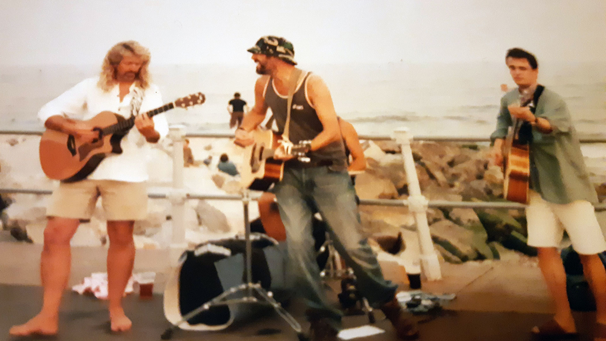
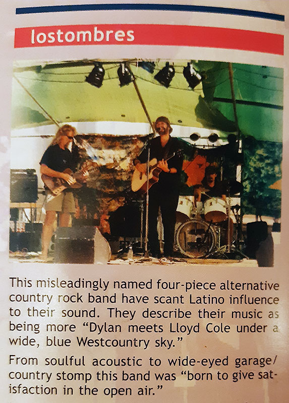
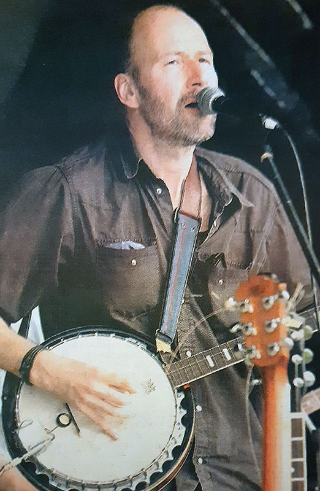
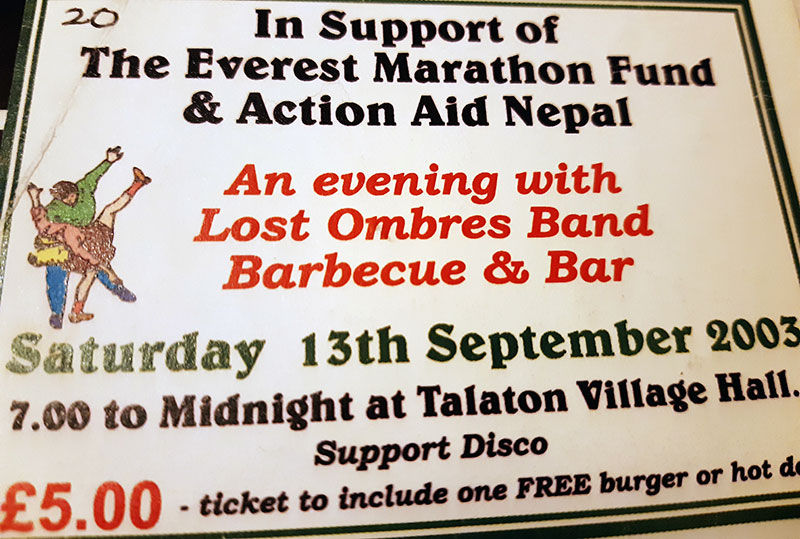

<!DOCTYPE html>
<html lang="en"></html>
<head>
  <meta charset="UTF-8">
  <meta http-equiv="X-UA-Compatible" content="IE=edge">
  <meta name="viewport" content="width=device-width, initial-scale=1.0">
  <link rel="preconnect" href="https://fonts.googleapis.com">
  <link rel="preconnect" href="https://fonts.gstatic.com" crossorigin>
  <link href="https://fonts.googleapis.com/css2?family=DM+Mono&amp;family=DM+Sans&amp;display=swap" rel="stylesheet">
  <link rel="stylesheet" href="css/main.css">
  <title>The Adders</title>
</head>
<div id="circle-container">
  <div id="circle">
    <button id="close">X</button>
    <button id="open"></button>
  </div>
</div>
<nav id="nav">
  <ul>
    <li><a href="index.html">TAKE ME HOME</a></li>
    <li><a href="snitw.html">something nasty</a></li>
    <li><a href="bedouin.html">bedouin</a></li>
    <li><a href="jackroller.html">jackroller</a></li>
    <li><a href="lost.html">lostombres</a></li>
    <li><a href="petrol.html">petrol moon    </a></li>
    <li><a href="starkadders.html">starkadders</a></li>
    <li><a href="idle.html">idle lovers</a></li>
    <li><a href="adders.html">the adders</a></li>
  </ul>
</nav>
<div id="main">
  <div class="content">
    <h1>
      <div class="smallL">~~</div>
      <div class="normal">Lostombres</div>
      <div class="smallR">~~ </div>
    </h1>
    <div class="photos"></div>
    <div class="blurb long">
      <p>After moving to Ottery in early 2001, a little spell of between-band creation was then recorded by Rog, at Tony's tidy home based studio. Then thankfully, a recall back to the fetrilt ground of the mid-nineties became apparent – SNITW Drummer, Chris Durant, got in touch, running a few new creations together in Chris' Silverton home garage.</p>
      <p>We gave Ian McCord from the same village a shout. He'd been writing his own good stuff but was happy to join us. He proved to be a natural on the bass, finding and applying the classy background tuneful glue to what became LOSTOMBRES - god knows where that name came from but it stuck for a while!</p>
      <p>After some searching in Exeter music shops, we were then joined by the Fender-bending skank-fan, Big Ian 'Barefoot' Davey, from Exmouth on lead guitar. There started around 2-3 years of rehearsing and quite a few gigs from Taunton to St Austell and beyond. From this band, following a 7 song CD recording at a studio near Silverton in 2003 there then came roughly 4 CDs worth of songs,recorded by the semi-legendary talented sound engineer/producer and musician Jon Smith in the garage and some Live. The greatest hits being chosen for the 12 song CD <i>'Permanency'</i>. This included a cover of Dolly Parton's <i>Jolene</i>, and a classy number bequeathed by old Dave Cox called <i>Wheels</i>.</p>
      <p>Our charity Everest Climb fundraising Talaton gig (with live recording from Jon) included a slightly crazy banjo-jinxed version of <i>Born To be Wild</i>, which certainly raised some eyebrows - heavenward perhaps!</p>
    </div>
  </div>
  <div class="toonz">
    <h2>toonz</h2>
    <div class="song s1">
      <audio src="mp3s/lost/01-TVs on.mp3"></audio>
      <button> </button><span>TV's On</span>
    </div>
    <div class="song s2">
      <audio src="mp3s/lost/02-Greenfield.mp3"></audio>
      <button> </button><span>Greenfield</span>
    </div>
    <div class="song s3">
      <audio src="mp3s/lost/03-No God Above.mp3"></audio>
      <button> </button><span>No God Above</span>
    </div>
    <div class="song s4">
      <audio src="mp3s/lost/04-Wheels.mp3"></audio>
      <button> </button><span>Wheels</span>
    </div>
    <div class="song s5">
      <audio src="mp3s/lost/05-Country High.mp3"></audio>
      <button> </button><span>Country High</span>
    </div>
    <div class="song s6">
      <audio src="mp3s/lost/06-Hard Sholder.mp3"></audio>
      <button> </button><span>Hard Shoulder</span>
    </div>
    <div class="song s7">
      <audio src="mp3s/lost/07-Rusting Chassis.mp3"></audio>
      <button> </button><span>Rusting Chassis</span>
    </div>
  </div>
  <div id="modal">
    <div id="caption"></div>
  </div>
  <script src="js/scripts.prod.js"></script>
</div>